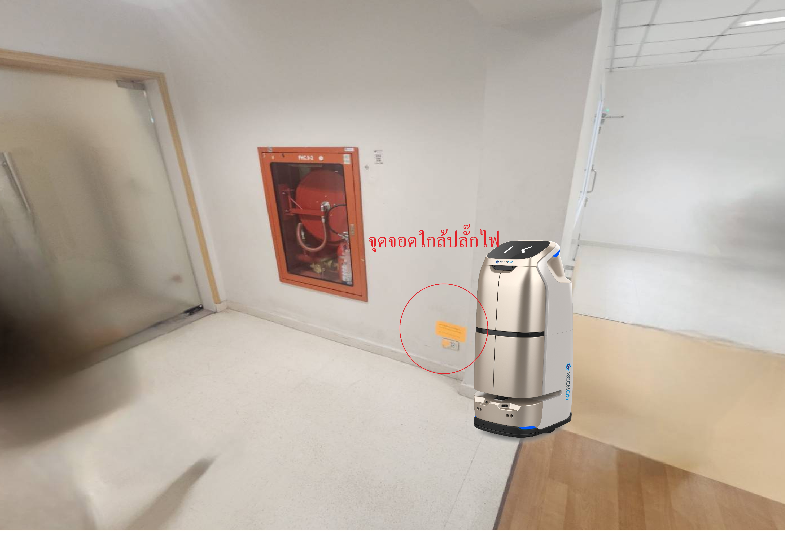

ภาพรวมโครงการ
การนำเสนอครั้งนี้มีวัตถุประสงค์เพื่อแสดงศักยภาพของหุ่นยนต์ Keenon W3 ในการสนับสนุนงานบริการและโลจิสติกส์ภายในโรงพยาบาลจุฬาภรณ์ ทั้งในส่วนของอาคารอัครราชกุมารี (อาคาร 100 เตียง) และกรมพระศรีสวางควัฒน (อาคาร 400 เตียง) เพื่อเพิ่มประสิทธิภาพ ลดภาระงานของบุคลากร และยกระดับคุณภาพการบริการผู้ป่วย
ทำความรู้จักหุ่นยนต์ Keenon W3
หุ่นยนต์ Keenon W3
คุณสมบัติทางเทคนิคหลัก
- ขนาด (กว้าง x ลึก x สูง): 45.9 x 54.9 x 108.1 ซม. (18.07" x 21.61" x 42.56")
- น้ำหนัก: 48 กก. (106 ปอนด์)
- ความเร็วสูงสุด: 0.8 เมตร/วินาที (2.63 ฟุต/วินาที)
- เวลาในการชาร์จ: 6.5 ชั่วโมง
- ความจุในการบรรทุกรวม: 20 กก. (44 ปอนด์)
- อายุแบตเตอรี่: สูงสุด 12 ชั่วโมง
- ความสามารถในการขึ้นทางลาดชัน: สูงสุด 7°
- ความกว้างทางผ่านขั้นต่ำ: 70 ซม. (27.56")
ประโยชน์ทั่วไปของ Keenon W3
หุ่นยนต์ Keenon W3 ได้รับการออกแบบมาเพื่อการขนส่งภายในอาคารอย่างมีประสิทธิภาพ ด้วยคุณสมบัติที่โดดเด่นด้านการนำทางที่แม่นยำ ความจุในการบรรทุกที่เหมาะสม และการทำงานที่ต่อเนื่องยาวนาน ช่วยลดภาระงานของบุคลากร เพิ่มความรวดเร็วในการบริการ และสร้างสภาพแวดล้อมที่ทันสมัย
วิดีโอแนะนำ Keenon W3
การประยุกต์ใช้ในโรงพยาบาลจุฬาภรณ์
อาคารอัครราชกุมารี (อาคาร 100 เตียง)
วัตถุประสงค์ของการทดลองใช้หุ่นยนต์
- ทดสอบความเป็นไปได้ในการใช้หุ่นยนต์ Keenon W3
- ใช้สำหรับการขนส่งยาและโลหิตระหว่างชั้นภายในอาคาร
- พิจารณาความเหมาะสมด้านเวลาและความปลอดภัย
ข้อมูลอาคารและลิฟต์
- อาคารมี 14 ชั้น
- ใช้ลิฟต์หมายเลข 8 เป็นลิฟต์หลักสำหรับหุ่นยนต์
- อาจมีการรอลิฟต์เนื่องจากใช้งานร่วมกับบุคลากรและผู้ป่วย
ลิฟต์หมายเลข 8 ที่หุ่นยนต์จะใช้
จุดจอดหุ่นยนต์ที่เสนอ
จุดจอดหุ่นยนต์ชั้น 5

จุดจอดหุ่นยนต์ชั้น 8
จุดจอดหุ่นยนต์ชั้น 9
- ชั้น 5:ห้อง Lab กลาง – รับ/ส่งโลหิต (ทุก Ward ที่มีการเบิกใช้เลือด)
- ชั้น 8:ห้องยา – จัดส่งยาให้ IPD/OR (ปลายทางชั้น 8-14)
- ชั้น 9:ห้องยาผสม – ผสมและกระจายยาเฉพาะโรค(ปลายทางชั้น 3,7,8,9,14)
ภารกิจการขนส่งโลหิต
- ใช้กระติกควบคุมอุณหภูมิ (หุ่นยนต์รองรับ)
- ส่งถึงปลายทางภายใน 15 นาที
- เสี่ยงถ้าคอยลิฟต์นาน ควรมีลิฟต์แยกสำหรับหุ่นยนต์
ภารกิจการขนส่งยา
- จัดส่งยา 1 (ฉีด / กิน) จากชั้น 8
- ส่งถึง OR ชั้น 6 และ Ward อื่น ๆ
- ความถี่:รอบการจัดส่งทุกๆ 1 ชม.
- ระดับความเร่งด่วน: ปกติ – ด่วน
วิเคราะห์ความเหมาะสมของหุ่นยนต์
- โลหิต:ปานกลาง – ต้องควบคุมเวลาและอุณหภูมิ (แนะนำให้พิจารณาการจัดการเวลาในการรอลิฟต์อย่างจริงจัง)
- ยา:เหมาะสมมาก – น้ำหนักเบา ส่งถึงได้ (มีโอกาสที่หุ่นยนต์จะทำงานได้ดี)
ข้อเสนอเพิ่มเติม
- ติดตั้งลิฟต์สำหรับหุ่นยนต์โดยเฉพาะ (ถ้าเป็นไปได้)
- ต้องมีคนติดตามเวลาเดินทางของหุ่นยนต์ real-time เพื่อประเมินผลและแก้ไขปัญหา
แผนการทดลองและตัวชี้วัด
- ระยะที่ 1 (นำร่อง):ทดสอบการขนส่งโลหิตและยาในเส้นทางที่กำหนด (เช่น ชั้น 5-8-9) เป็นเวลา 1 เดือน
- ตัวชี้วัดความสำเร็จ (KPIs):
- ลดระยะเวลาขนส่งเฉลี่ยได้ [X]%
- อัตราความผิดพลาดในการขนส่ง [ยา/โลหิต] ลดลงเหลือ [Y]%
- คะแนนความพึงพอใจของบุคลากรต่อการทำงานของหุ่นยนต์ [Z]%
- แผนการขยายผล:หากผลการทดลองเป็นไปในทางที่ดี สามารถเพิ่มจำนวนหุ่นยนต์และขยายเส้นทางการขนส่งไปยัง Ward อื่นๆ ได้
การสนับสนุนและการบำรุงรักษา
- ทีมสนับสนุนด้านเทคนิคจาก Botlink Group พร้อมให้ความช่วยเหลือตลอด 24ชั่วโมง
- การฝึกอบรมบุคลากรด้านการใช้งานและแก้ปัญหาเบื้องต้น (Troubleshooting)
- แผนการบำรุงรักษาเชิงป้องกัน (Preventive Maintenance) 4 ครั้ง/ปี และการจัดหาอะไหล่
กรมพระศรีสวางควัฒน (อาคาร 400 เตียง)
วิเคราะห์ภาระงาน
- มีภารกิจขนส่งต่อวันจำนวนมาก ทั้งในช่วงเวลาปกติและเร่งด่วน
- จุดหมายปลายทางกระจายทั้งแนวราบ แต่ละปีกตึก และแนวตั้ง แต่ละชั้น
- มีการใช้งานตลอด 24 ชั่วโมง โดยเฉพาะใน Ward IPD ชั้น 5, 6, 8, 9
การวางจุดติดตั้งหุ่นยนต์
- ตัวที่ 1:ห้องยาหลักชั้น1 #จุดนี้ควรมีหุ่นยนต์2ตัว(จุดเริ่มต้นหลักของภารกิจขนส่ง)
- ตัวที่ 2:ห้องยาชั้น2 ส่งระหว่างชั้น ไม่จำเป็นต้องขึ้นลิฟต์ สามารถย้ายไปช่วยชั้น 1 ได้
- ตัวที่ 3:LAB กลางชั้น5 (ส่งตามWard และ OPD ทุกแผนก)
- ตัวที่ 4:(ถ้าต้องการสำรองหรือรองรับช่วงเวลาเร่งด่วน): ชั้น 2 หรือ 3 ฝั่ง B เพื่อรองรับ OPD ที่มีปริมาณงานสูงในช่วงกลางวัน
ภาพจุดจอดหุ่นยนต์
จุดจอดหุ่นยนต์: ห้องยาหลักชั้น 1

จุดจอดหุ่นยนต์: ห้องยาชั้น 2
(รอคำแนะนำจากทางโรงพยาบาล)

จุดจอดหุ่นยนต์: LAB กลางชั้น 5
(รอคำแนะนำจากทางโรงพยาบาล)
เหตุผลในการกำหนดจำนวน
- อย่างน้อย 3 ตัว เพื่อให้รองรับการขนส่งพร้อมกันในแต่ละปีกตึก และลดเวลารอคิวลิฟต์หรือภารกิจซ้อนทับ
- หากต้องการความต่อเนื่องและสำรองกรณีหุ่นยนต์ชาร์จแบตหรือซ่อมบำรุง ควรมี 4 ตัว (3 ตัวหลัก + 1 ตัวสำรอง/เสริม)
ประโยชน์ที่โรงพยาบาลจะได้รับ
- เพิ่มประสิทธิภาพ: ลดเวลาและภาระงานของบุคลากรในการขนส่ง โดยหุ่นยนต์สามารถทำงานได้ตลอด 24ชั่วโมง ไม่มีเหนื่อยล้าหรือความผิดพลาดจากการเมื่อยล้า
- ลดความเสี่ยง: ลดโอกาสการติดเชื้อจากการสัมผัสสิ่งของและพื้นที่เสี่ยง รวมถึงลดอุบัติเหตุจากการขนย้ายของบุคลากร
- ยกระดับบริการ: เพิ่มความรวดเร็วและแม่นยำในการส่งมอบสิ่งของสำคัญ เช่น ยาและโลหิต ซึ่งส่งผลโดยตรงต่อคุณภาพการรักษาและความพึงพอใจของผู้ป่วย
- ประหยัดต้นทุน:ลดภาระงานบุคลากรในการขนส่งได้ (ตัวอย่าง: จากการที่บุคลากรสามารถไปปฏิบัติงานที่ต้องใช้ทักษะสูงกว่า เช่น การดูแลผู้ป่วยโดยตรง แทนงานขนส่งซ้ำซ้อน)
- ภาพลักษณ์นวัตกรรม: สร้างภาพลักษณ์ความเป็นผู้นำด้านเทคโนโลยีทางการแพทย์ ดึงดูดบุคลากรทางการแพทย์รุ่นใหม่ และสร้างความเชื่อมั่นให้กับผู้ใช้บริการ
- ผลตอบแทนการลงทุน(ROI): หุ่นยนต์จะช่วยให้การทำงานมีประสิทธิภาพสูงขึ้น ลดความผิดพลาดและภาระงาน ซึ่งเมื่อเวลาผ่านไปจะช่วยให้เกิดการประหยัดต้นทุนและเพิ่มคุณค่าให้โรงพยาบาลในระยะยาว
คุณค่าที่ Keenon W3 มอบให้โรงพยาบาล
- ลดภาระงานบุคลากร: หุ่นยนต์ Keenon W3 จะเข้ามาทำหน้าที่ขนส่งสิ่งของที่ใช้แรงงานและเวลามาก ทำให้พยาบาลและเจ้าหน้าที่สามารถทุ่มเทเวลาให้กับการดูแลผู้ป่วยและงานที่ต้องใช้ปฏิสัมพันธ์กับคนได้อย่างเต็มที่
- ความแม่นยำและสม่ำเสมอ: หุ่นยนต์ทำงานได้ 24ชั่วโมง ไม่มีเหนื่อย ไม่มีความผิดพลาดจากความเมื่อยล้า ทำให้การบริการเป็นไปอย่างสม่ำเสมอและแม่นยำ โดยเฉพาะในภารกิจสำคัญอย่างการขนส่งยาและโลหิต
- สร้างสภาพแวดล้อมการทำงานที่ปลอดภัยและทันสมัย: ลดความเสี่ยงจากการสัมผัสเชื้อโรค และสร้างบรรยากาศที่ดีและดึงดูดบุคลากร
การจัดการข้อกังวลที่พบบ่อย
- ความปลอดภัยของหุ่นยนต์: หุ่นยนต์ Keenon W3 มาพร้อมระบบเซ็นเซอร์และระบบนำทางอัจฉริยะ (SLAM) ที่ช่วยป้องกันการชนสิ่งกีดขวาง คน และการตกจากบันได รวมถึงมีระบบหยุดฉุกเฉิน
- การทำงานร่วมกับบุคลากร: หุ่นยนต์ถูกออกแบบมาให้ทำงานร่วมกับมนุษย์ได้อย่างราบรื่น มีสัญญาณเสียงและไฟเตือนเมื่อเข้าใกล้ และสามารถหลบหลีกเส้นทางได้อัตโนมัติ
- การบูรณาการระบบ: มีแนวทางในการเชื่อมต่อระบบลิฟต์อัจฉริยะ และสามารถพัฒนาการเชื่อมต่อกับระบบสารสนเทศของโรงพยาบาล (HIS, Pharmacy) ในอนาคตได้